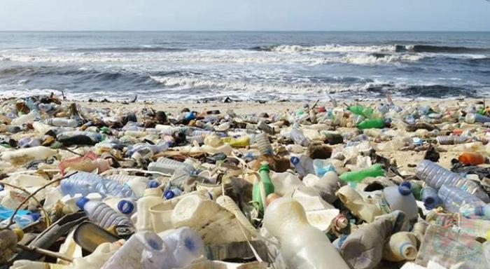

Artikel 1
Dipulikasi pada Desember 12, 2024
Bukan hanya di Indonesia saja tapi di seluruh dunia saat ini sedang menghadapi tantangan besar yang akan merubah bumi kita jika kita tidak segera memperbaikinya. Indonesia merupakan negara yang menduduki peringkat ketiga dalam menyumbangkan sampah ke dunia, hal tersebut tentu saja tidak dapat kita banggakan. Polusi yang di hasilkan oleh Indonesia merupakan sampah dari plastik, sampah sisa makanan bahkan sampah laut. Polusi sampah merupakan salah satu tantangan yang bagi sebagian orang di dunia sulit untuk dilakukan bahkan sampai menjadi kebiasaan sehari-hari. Semua orang bisa melakukan nya jika dimulai dari diri sendiri, keyakinan, dan kita mau untuk melakukan nya. Semuanya dapat dilakukan mulai dari diri sendiri, kita bisa melakukan aksi nyata dengan cara Gerakan Peduli Lingkungan
Dipulikasi pada Desember 12, 2024
Sekolah Cinta Kasih Tzu Chi telah membuktikan diri sebagai salah satu pelopor dalam menanamkan nilai-nilai peduli lingkungan sejak dini kepada para siswa dan siswinya. Melalui aksi kecil yang perlahan-lahan menjadi kebiasaan, Sekolah Cinta Kasih Tzu Chi membuat langkah kecil yang mungkin menurut beberapa orang tidak perlu di lakukan namun dampak yang di berikan sangatlah besar. Sekolah Cinta Kasih Tzu Chi membiasakan siswanya untuk membawa sampah yang dapat di daur ulang dari rumah untuk di bawa ke sekolah setiap hari selasa dan jumat. Sekolah ini dengan aktif menjalankan program kerja GPL yang bertujuan untuk meningkatkan kesadaran para murid betapa pentingnya melestarikan lingkungan. Selain itu, Di Sekolah ini kita juga dilarang untuk membawa plastik ke sekolah untuk mengurangi

Terbukti dengan adanya Gerakan Peduli Lingkungan dapat membawa perubahan kepada bumi kita sedikit demi sedikit. GPL telah berhasil mengubah pola pikir dan perilaku banyak orang. Berkat GPL, penanaman pohon, dan pengelolaan sumber daya alam yang berkelanjutan, kualitas lingkungan di banyak daerah mengalami perbaikan yang signifikan. Udara menjadi lebih bersih, air sungai lebih jernih, dan keanekaragaman hayati mulai pulih. Jika semakin banyak individu yang sadar akan pentingnya mengurangi limbah, menghemat energi, dan memilih produk ramah lingkungan maka akan menjadi gaya hidup berkelanjutan bagi mereka yang melakukannya secara rutin.